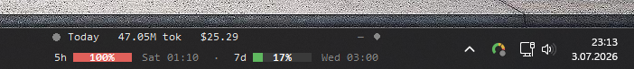
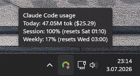
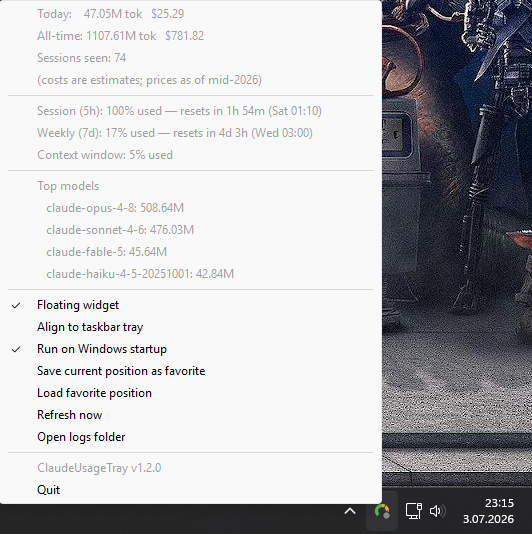

Claudebar
Live Claude Code token usage, cost, and rate limits — right on your Windows taskbar. No API key, no network calls, no setup beyond double-clicking the exe.

Live Claude Code token usage, cost, and rate limits — right on your Windows taskbar. No API key, no network calls, no setup beyond double-clicking the exe.

Everything it shows comes straight from Claude Code's own local data — nothing is uploaded, and nothing needs an API key.
Reads Claude Code's local session logs directly — not the API.
Conversation content is never read — only model names, token counts, and rate-limit percentages.
A filesystem watcher reacts the instant Claude Code writes a turn — no polling delay.
A Red/Amber/Green dot shows whether Claude is working, waiting on you, or done.
Three genuinely separate data sources, none substitutable for another — see ARCHITECTURE.md for the full story.
Read directly from Claude Code's local ~/.claude/projects/**/*.jsonl logs. No setup needed beyond running the app.
Account-level rate-limit state that only exists inside Claude Code's live connection to Anthropic. Surfaced via an auto-installed statusLine hook.
Claude Code's live per-turn lifecycle, exposed only through its event hooks — also auto-installed, never overwrites your own hooks.
Right-click the tray icon for the full breakdown, or glance at the widget for the same numbers live.


One self-contained file handles everything — the tray app, the statusLine hook, and the auto-install.
Claudebar.exe from the latest release.SHA256SUMS.txt you can verify the
download against — see the
README for
the exact command, plus the from-source install path if you'd rather run
it with Python.